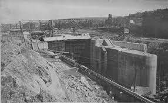

The Locks and Their History
The Ballard Locks are multiple sets of retractable dams intended to reduce the enviromental impact caused by the construction of the Lake Washington Ship Canal. Planning for the canal itself began in 1891, while the locks were approved in 1910. The construction of the locks concluded in 1917, costing a grand total of 3 million dollars.